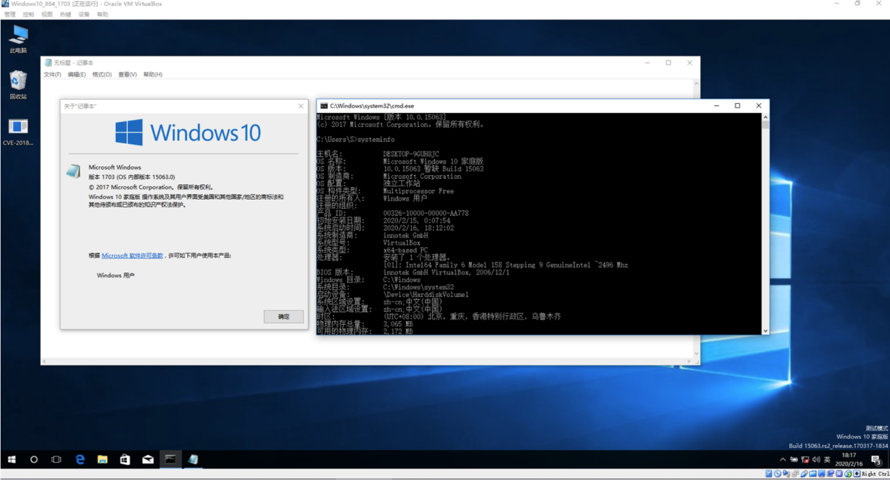
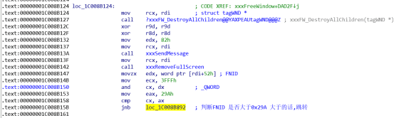
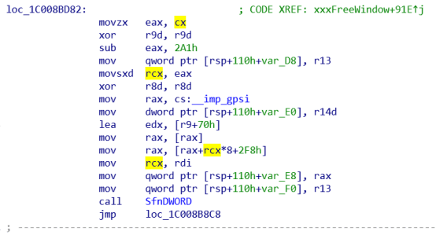

如何构造一个触发BSOD的Poc呢,根据网上现存的分析报告我们得到了一个这样触发BSOD的思路.
PEB->KernelCallbackTable中的fnDword(),xxxClientAllocWindowClassExtraBytes()函数指针的指向,让其指向我们自定义的处理函数.
fnDword()函数内释放父类窗口
xxxClientAllocWindowClassExtraBytes()函数内调用NtUserSetWindowFNID()函数,并创建新的滚动条控件,使用SetCapture()函数修改滚动条捕获窗口
fnDword() 函数内判断发送的Message是否为0x70,如果是,则向新创建的滚动条控件发送0x1F号消息
虽然这样确实可以触发BSOD,但是我们根本不知道为什么这样会导致BSOD(Double Free)
下面是本人关于CVE-2018-8453的分析报告
下面是本人关于 CVE-2018-8453的分析报告
触发BSOD的Poc中,完成了1 - 5的准备工作之后,便向滚动条子控件发送了一个WM_LBUTTONDOWN消息
我们知道,向滚动条子控件(Scroll)发送WM_LBUTTONDOWN,消息时,会调用到win32kfull!xxxSBTrackInit()函数,该函数主要是来实现滚动条跟随鼠标移动的,该函数首先会创建一个0x80字节大小的Session Pool,用来保存 tagSBTrack结构
接着将创建好tagSBTRACK结构的指针,写入到 tagTHREADINFO.tagSBTRACK处,在Windows10 1703 X64中,该结构的偏移地址为tagTHREADINFO+0x278
需要注意的是Lock(&pSBTrack->spwndSBNotify, pwnd->spwndParent),让滚动条子控件引用父类窗口,也就是我们创建的父窗口建立引用+1,此处很重要(PS:当时写Poc时创建滚动条子控件时,属性忘记设置WS_CHILD,导致滚动条窗口的父窗口非创建的父窗口导致无法利用漏洞)
win32kfull!xxxSBTrackInit函数最后会调用win32kfull!xxxSBTrackLoop函数,来进行消息循环,消息循环函数win32kfull!xxxDispatchMessage会使用fnDWORD函数回调R3,这时我们就知道为什么要Hook fnDWORD函数了.
在fnDWORD函数里判断是否是滚动条窗口发送的回调,调用DestroyWindow()函数释放主窗口.
DestoryWindow()函数会调用win32kfull!xxxFreeWindow()函数来释放窗口,但是该函数经常被调用,我们可以使用条件断点来判断是否是我们要释放的窗口
Ba e1 win32kfull!xxxFreeWindow ".if( poi(rcx) == 释放窗口的句柄 ){}.else{g}"
此时在rcx+0x52处下内存写入断点 rcx+0x52 处为tagwnd.FNID,也就是导致漏洞的主角(也不能这样说,本质问题还是Kernel CallBack).窗口扩展空间必须要在创建窗口类时设置窗口类的大小,在Poc中我设置为 wndclass.cbWndExtra = 0x8
触发xxxClientAllocWindowClassExtraBytes函数回调后,如何判断是主窗口调用的该函数呢,这里我使用了SetWindowLongA(Window, 0, (ULONG)Window);将主窗口句柄保存在窗口扩展中.
MSG中,保存了窗口扩展类的地址,里面保存了设置的父窗口指针,通过这个来判断是否为父窗口调用的xxxClientAllocWindowClassExtraBytes函数.
此时,我们创建一个新的滚动条窗口,不设置父类句柄,以及子类属性,并设置正在释放窗口Window的FNID为 0x2A1,本来Window的FNID为0x8000,调用NtUserSetWindowFNID后为0x82A1,接着设置新的捕获窗口.
此时父窗口虽然已经调用DestroyWindow释放了,但是由于滚动条子窗口Scroll还对父窗口有引用,所以并未释放,最后win32kfull!xxxSBTrackLoop函数结束后,对pSBTrack->spwndSBNotify和链接的主窗口解引用,由于是最后一处引用,调用HMAssignmentUnlock()函数时会判断被绑定(Win32 Object)结构的cLockObj结构是否为1,如果为1代表只有一个引用,修改指针内容后后便立刻调用函数释放该结构,此处释放的函数为(Win32kfull!DestoryWindow)
问题就在这里,由于释放窗口要调用win32kfull!xxxFreeWindow函数,而FNID为释放窗口的Flag属性,被修改为0x82A1后,会再次调用fnDWORD函数回调R3,并发送为0x70的Message.
判断FNID的内容,来决定是否调用fnDWORD
可以看到此处调用fnDWORD,并且发送的Message为0x70
此时,我们向新创建的滚动条控件发送Message为0x1F的消息,最终会调用到win32kfull!xxxEndScroll函数
通过在win32kfull!SetCapture设置的捕获窗口,可绕过其验证,直入到释放tagSBTrack结构
此时线程内的tagSBTrack结构已经被释放了,接着回到win32kfull!xxxSBTrackInit执行代码
因为tagSBTrack结构已经在win32kfull!xxxEndScroll函数被释放了,但是win32kfull!xxxSBTrackInit函数并不知道,再次释放该内存导致Double Free!
Word:CVE-2018-8453从BSOD到ExpLoit(上).doc
Poc:Poc.zip